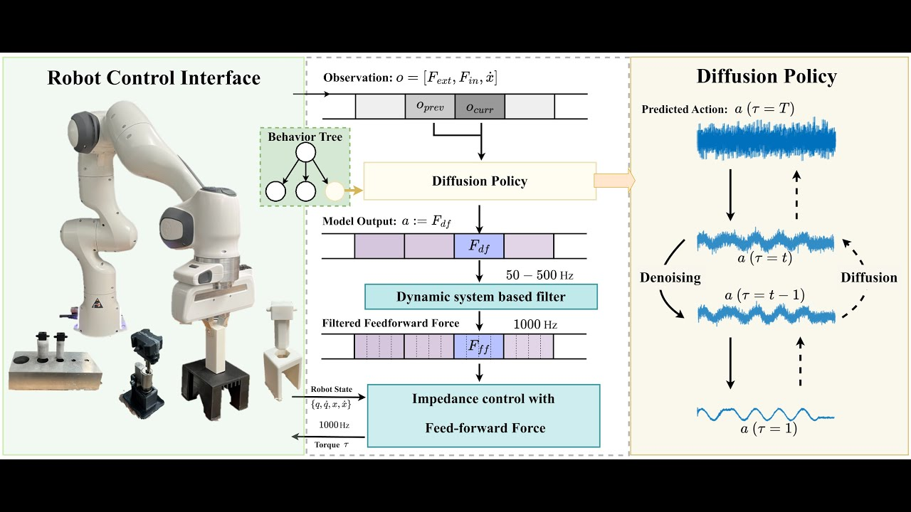
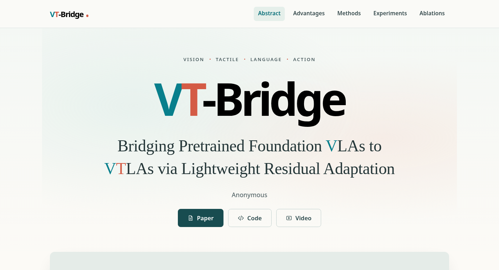
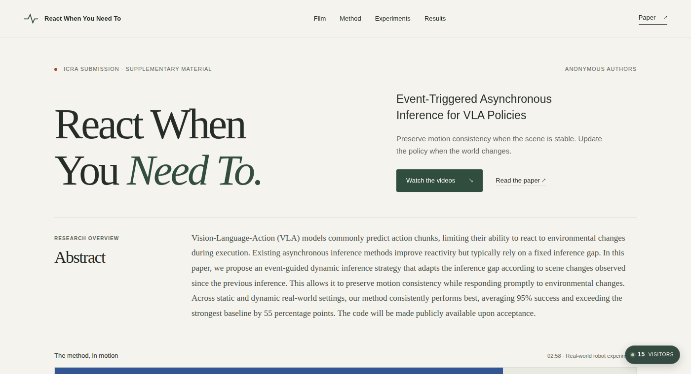
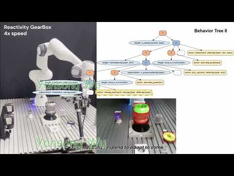

ROBOT DEMONSTRATION Watch demoTacDiffusion
Force-domain diffusion policy for precise tactile manipulation
Learning force and torque commands for precise robotic assembly, connecting generative policies with real-time robot control.
ROBOTICS · LEARNING · MANIPULATION
Learning to interact with
the physical world.
I’m a PhD candidate at the Technical University of Munich, working on robot learning and contact-rich manipulation.
My research has evolved from robot control and model-based methods to learning-based policies. This experience has given me a broad perspective on how robots learn and act, and drives my focus on reliable contact-rich manipulation in the real world. Looking ahead, I’m excited about the future of robotics, particularly the potential of robot foundation models and embodied agents to make physical interaction more capable and adaptable.
01 / SELECTED WORK
From tactile feedback
to capable robotic systems.

ROBOT DEMONSTRATION Watch demoForce-domain diffusion policy for precise tactile manipulation
Learning force and torque commands for precise robotic assembly, connecting generative policies with real-time robot control.


Event-triggered asynchronous inference for VLA policies
Adapting inference timing to scene changes so robots preserve smooth motion while reacting promptly when the world changes.

From agent-based task planning to reactive execution with online replanning.
This is a comprehensive robotic assembly system integrating LLM-as-BT-Planner, Video-to-BT, and TacDiffusion. For more details, please contact me.
02 / PUBLICATIONS
No matching papers. Try another title, author, or research area.
03 / LET’S CONNECT
I’m approaching the end of my PhD and exploring industry research opportunities in robot learning and manipulation. I’d be happy to discuss research, collaborations, or your team’s work.